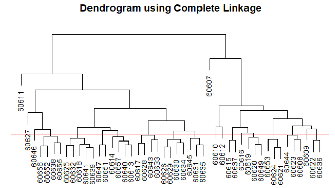
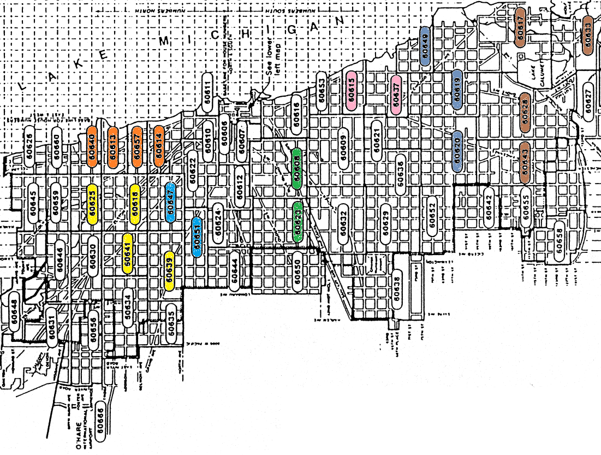
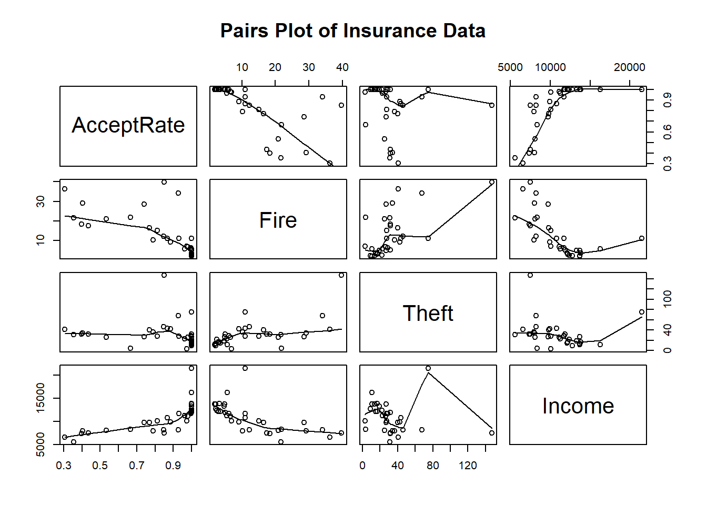
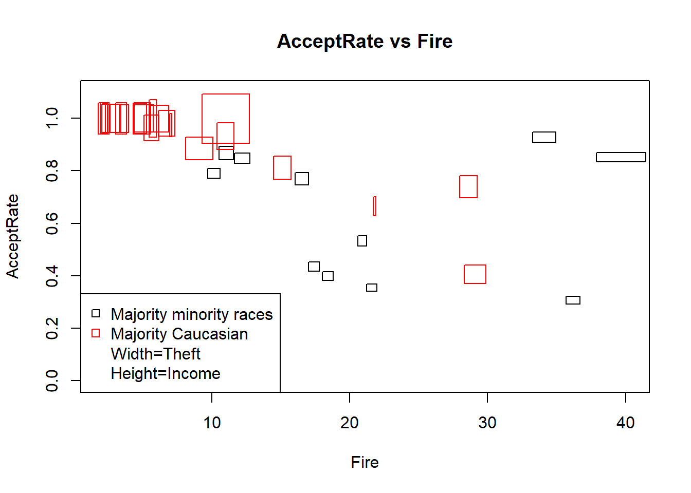
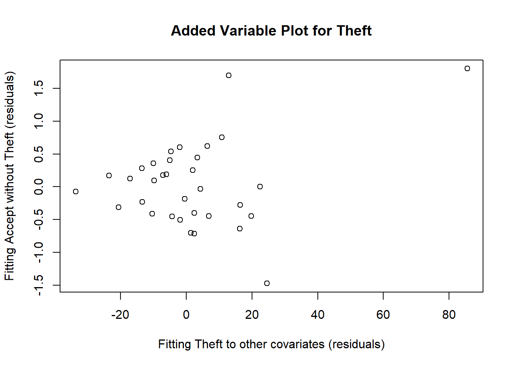
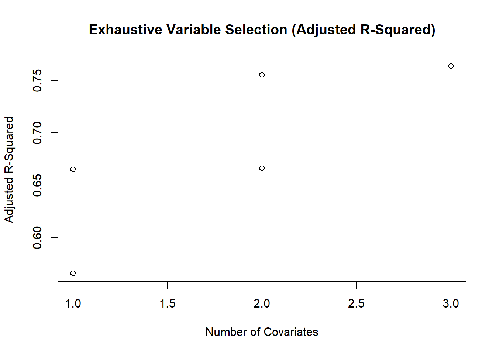
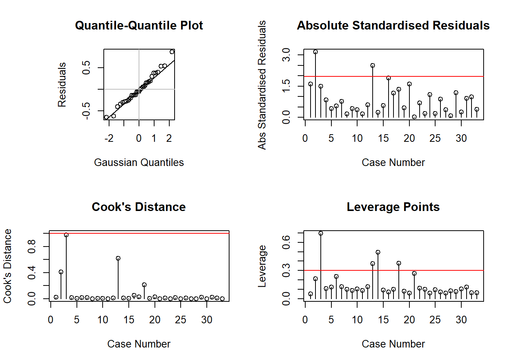
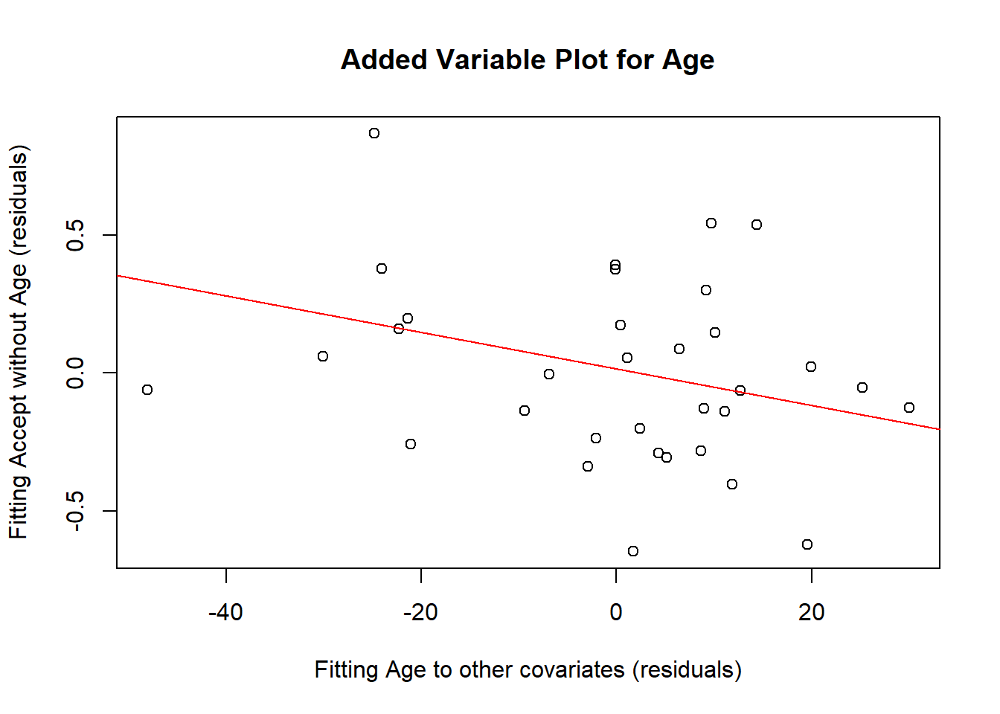

Chapter 3 Insurance redlining
chicago.data = read.csv("data/chicago.csv")
group2 = c(60625,60641,60618,60639)
group3 = c(60651,60647)
group4 = c(60640,60613,60657,60614)
group5 = c(60623,60608)
group6 = c(60615,60637)
group7 = c(60620,60619,60649)
group8 = c(60643,60628,60617,60633)
g60618 = colMeans(chicago.data[chicago.data$Zip %in% group2,])
g60647 = colMeans(chicago.data[chicago.data$Zip %in% group3,])
g60613 = colMeans(chicago.data[chicago.data$Zip %in% group4,])
g60608 = colMeans(chicago.data[chicago.data$Zip %in% group5,])
g60615 = colMeans(chicago.data[chicago.data$Zip %in% group6,])
g60619 = colMeans(chicago.data[chicago.data$Zip %in% group7,])
g60617 = colMeans(chicago.data[chicago.data$Zip %in% group8,])
newgroups = c(group2,group3,group4,group5,group6,group7,group8)
newgps = t(data.frame(g60618,g60647,g60613,g60608,g60615,g60619,g60617))
names(newgps) = names(chicago.data)
chicago = chicago.data[!(chicago.data$Zip %in% newgroups),]
chicago = rbind(chicago,newgps)
rownames(chicago) = 1:length(chicago[,1])
chicago$Zip[27:33] = c(60618, 60647, 60613, 60608, 60615, 60619, 60617)
chicago2 = chicago[chicago$Invol!=0,]
chicago$Invol=chicago$Invol+0.01
AcceptRate = (chicago$Volun)/(chicago$Volun+chicago$Invol)
AcceptRate2 = (chicago2$Volun)/(chicago2$Volun+chicago2$Invol)
chicago=chicago[,-c(1)]
chicago2=chicago2[,-c(1)]
covar = chicago[c(3,4,8)]
covar2 = chicago2[c(3,4,8)]
covar3 = chicago[-c(1,6,7)]
covar4 = chicago2[-c(1,6,7)]3.1 Introduction
In this report, we analyse Chicago insurance data collected between December 1977 and February 1978. Insurance companies are not allowed to discriminate based on race or age of housing, called ‘redlining’. Our primary interest is to study whether they did discriminate based on these factors in Chicago after taking other factors into account. If the extent of redlining is significant, the state could pursue a case to reprimand the behaviour of the Chicago insurance industry, or they could investigate particular insurance companies more deeply.
3.2 Setting up the data
Our data is identified according to zip codes and we have variables for race (in % minority), fire (per 1,000 housing units), theft (per 1,000 housing units), age (% of units built in or before 1939), income (median family income in 10,000 US dollars), voluntary market activity (per 100 housing units) and involuntary market activity (per 100 housing units). Note that income has been divided by 10,000 so that regression coefficients are easier to write down. There are 47 zip codes in the dataset.
3.2.1 The observations

Figure 1 – Dendrogram created using hierarchical clustering of covariates between zip codesWe compare the dendrogram to a map of Chicago and merge the adjacent zip codes as in Figure 2.

Figure 2 – Map of Chicago in 1977/78 with ‘similar’ zip codes colouredThe data we have is classified according to zip codes and we may have an issue regarding independence between observations (an assumption for standard linear models). Our proposed solution to this is to merge some of zip codes together. We use hierarchical clustering to determine which zip codes exhibit the most similar characteristics with regards to the scaled covariates (race, fire, theft, age and income). We exclude the response from this process as we want to provide a possible legal case for redlining and do not want to fit a model that will be biased towards the result that we want.
Above a certain point in the Euclidean-distance dendrogram created by hierarchical clustering, as shown in Figure 1, we merge any zip codes that are adjacent to each other on a map of Chicago at the time. The choice of cut-off was motivated by comparing dendrograms created using ‘complete’ linkage versus ‘single’ linkage and seeing which of the same groups were formed. (Intuitively speaking, complete linkage looks at the farthest Euclidean distance between covariates in groups, while single linkage looks at the closest.) Another motivation for the cut-off is to retain a sufficient number of observations in our dataset.
There is a question on how exactly we should merge the data between the zip codes. We decide to simply take the mean of all variables data collected for the zip codes in the same group and regard it as a single zip code observation. This is arguably reasonable as the postcodes are supposed to have similar values for the covariates, and fire and theft are already standardised to every 1,000 housing units. The number of zip codes is reduced from 47 to 33.
3.2.2 The variables
The variables voluntary market activity and involuntary market activity are effectively the number of accepted insurance policies and rejected insurance policies respectively. Since we will use a standard linear model, we can only have one response variable, so we define a new variable,
\[ AcceptRate = \left( \frac{\text{Voluntary market activity}} {\text{Voluntary market activity} + (\text{Involuntary market activity} + 0.01)} \right), \]
and
\[ Accept = \Phi^{-1}(AcceptRate), \] where \(\Phi^{-1}\) is the inverse of the cumulative distribution function of the standard normal distribution (i.e. the probit function). Our final response variable will be Accept, but AcceptRate is a useful intermediate result.
AcceptRate is a proportion variable between 0 and 1 non-inclusive. Applying the probit function allows us to match the range of the response with the range of linear predictor of the regression, while also making the response look more bell-shaped.
3.3 Standard Linear Model
We proceed to fit a linear model to the data using the standard lm function in R. Our strategy will be to fit the best possible model with Accept as the response and fire, theft and income as the covariates. Then, we will use added variable plots to check if race or age is relevant to the regression.
3.3.1 Exploratory Data Analysis
pairs(cbind(AcceptRate,covar),main="Pairs Plot of Insurance Data",panel=function(x,y){points(x,y);lines(lowess(x,y))})
Figure 3 - Pairs plot of insurance dataPrior to fitting our model, we will make a few plots using our initial covariates. We will use AcceptRate rather than Accept in these plots as they are roughly distributed in the same way, but AcceptRate is always between 0 and 1, which will be more interpretable on the vertical axis.
The pairs plot of our initial covariates and AcceptRate is shown in Figure 3. As expected, we see some clear correlations between AcceptRate and Fire, and AcceptRate and Income, which are negative and positive respectively. Theft alone appears to be a poor determinant of AcceptRate. There also does not appear to be a multicollinearity problem between the covariates. Similarly, we can confirm that there are no multicollinearity issues between any of race, fire, theft, age and income in a larger pairs plot.
covari = as.matrix(covar)
covarsc = covari %*% diag(1/sqrt(diag(crossprod(covari))))
covarsc = data.frame(covarsc)
names(covarsc)=names(covar)
condition = chicago$Race>50
black = chicago[condition,]
notblack = chicago[!condition,]
covar5 = black[c(3,4,8)]
covar6 = notblack[c(3,4,8)]
covar5sc = covarsc[condition,]
covar6sc = covarsc[!condition,]
AcceptRateBlack = AcceptRate[condition]
AcceptRateNotBlack = AcceptRate[!condition]
plot(covar5$Fire,AcceptRateBlack,type="n",
xlab="Fire",
ylab="AcceptRate",
main="AcceptRate vs Fire",
xlim=c(min(covar$Fire),max(covar$Fire)+0.5),
ylim=c(0,max(AcceptRate)+0.1))
symbols(covar5$Fire,AcceptRateBlack,rectangles=cbind(covar5sc$Theft,covar5sc$Income), add=T, inches=1/2)
symbols(covar6$Fire,AcceptRateNotBlack,rectangles=cbind(covar6sc$Theft,covar6sc$Income), add=T, inches=1/2,fg='red')
legend("bottomleft",legend=c("Majority minority races","Majority Caucasian","Width=Theft","Height=Income"),pch=c(0,0,NA,NA),col=c("black","red"))
Figure 4 – Symbol coplot of AcceptRate against FireWe can investigate the relationship between these variables more closely using a symbol co-plot as in Figure 4.
The plot has been colour-coded according to whether a zip code has minority races comprising over 50% of the zip code population. It should be noted that two-thirds of the zip codes had a majority Caucasian population.
We can see a clustering of points on the top left, with low fire risk, high AcceptRate, high income, relatively low theft and high proportion of Caucasians. Theft does not appear to play a major factor as we discussed earlier, although there is an observation with high theft and high AcceptRate on the far right. As before, we see a negative correlation between fire and AcceptRate and a positive correlation between income and AcceptRate. There is a thin observation in the middle with unusually low theft, but fire risk may be dragging its AcceptRate down. Overall, there is some evidence that race may be a factor in AcceptRate, but there may well be a confounding factor that explains what we are seeing. In fact, we achieve quite a similar plot if we colour-code for above or below the median percentage for age.
x = as.matrix(covar[,c(1,2,3)])
maxiter = 100
library("MASS")
Accept = qnorm(AcceptRate)
x.value = rlm(x[,2]~x[,-2],maxit=maxiter)$resid
y.value = rlm(Accept~x[,-2],maxit=maxiter)$resid
plot(x.value, y.value,main="Added Variable Plot for Theft",
xlab="Fitting Theft to other covariates (residuals)",
ylab="Fitting Accept without Theft (residuals)")
Figure 5 - Added variable plot for Theft in a regression to explain AcceptOne thing to investigate is whether theft is relevant in a model that includes fire and income since evidence of theft’s explanatory power was not convincing in Figures 3 and 4.
We create an added variable plot for theft in Figure 5. Note that we use Accept rather than AcceptRate now since we will be fitting using Accept. We will use Accept from now onwards.
There is no clear linear pattern in Figure 5, so we conclude that theft is probably not relevant for this model. We can also use principal components analysis on the covariates to determine that over 90% of the variation information in the covariates is contained within two variables, so it is likely that one of fire, theft or income is not necessary.
3.3.2 Variable Selection
library("leaps")
Xtraining=x
Ytraining=Accept
Cpsel=leaps(Xtraining,Ytraining,method="Cp",nbest=2)
plot((Cpsel$size-1),Cpsel$Cp,main="Exhaustive Variable Selection (Mallow's C_p)",xlab="Number of Covariates",ylab="Mallows's Cp")
r2sel=leaps(Xtraining,Ytraining,method="adjr2",nbest=2)
plot((r2sel$size-1),r2sel$adjr2,main="Exhaustive Variable Selection (Adjusted R-Squared)",xlab="Number of Covariates",ylab="Adjusted R-Squared")
When designing a model for prediction, it is known that parsimonious models tend to perform the best. However, our purpose here is slightly different. We want to lean slightly more towards explaining Accept as much as possible using only fire, theft and income.
Then if we can show that race or age is still relevant, the argument that redlining is occurring may be more convincing to a legal authority.
We employ exhaustive variable selection including all squared and interaction terms. Some results are shown in Figure 6. We can see that the best model according to Mallow’s \(C_p\) criterion should have three variables, while according to adjusted \(R^{2}\), the best model should have five variables (leading to an adjusted \(R^{2}\) of 92.8%).
The best model according to Mallow’s \(C_p\) criterion should include fire, fire2 and the interaction term between fire and income. According to adjusted \(R^{2}\), the best model includes all the ones from the Mallow’s \(C_p\) model, as well as income and income2. As expected, theft does not feature in the preferred models as it showed no real pattern in its added variable plot (Figure 5).
Since it would make sense to include income if we are including an interaction term that involves income, we will choose to go halfway in between and include income but not income2, noting that the results for the \(C_{p}\) criterion as well as adjusted \(R^{2}\) are reasonable in this case too. The interaction term between fire and income is difficult to comprehend, but one interpretation may be that residents those with lower incomes may not have as much time or motivation to maintain their residences in a fire-conscious way and more fires may occur in these residences as a result. In addition, it should be noted that the magnitude of the correlation between fire and income is higher than both the magnitude of correlation between theft and fire or theft and income.
3.3.3 Model Diagnostics
The model we fit in the previous section is
\[ \widehat{Accept} = \underset{(0.909)}{3.061} - \underset{(0.078)}{0.383}\,Fire + \underset{(0.688)}{0.557}\,Income + \underset{(0.001)}{0.006}\,Fire^2 + \underset{(0.054)}{0.107}\,(Fire \times Income) \]
where
\[ Accept = \Phi^{-1}\left( \frac{\text{Voluntary market activity}} {\text{Voluntary market activity} + (\text{Involuntary market activity} + 0.01)} \right). \] Equation 1 – Model with fire, income, fire2 and the interaction between fire and income fit using the ‘lm’ function in R
Notably, the adjusted \(R^{2}\) of this regression is quite good (0.9263) and the p-values for the coefficients are all significant at the 5% level except income and the interaction between fire and income at 0.42 and 0.06 respectively. The coefficient for fire2 is quite small, but we gave our reasoning in the previous section as to why we may want to keep slightly more covariates in the model rather than seeking the most parsimonious model.
sqcovar = (covar)^2
TheftIncome = covar$Theft*covar$Income
FireTheft = covar$Fire*covar$Theft
FireIncome = covar$Fire*covar$Income
names(sqcovar) = c("Fire2","Theft2","Income2")
supervar = data.frame(covar,sqcovar,TheftIncome,FireTheft,FireIncome)
model = lm(Accept~Fire+Income+Fire2+FireIncome,data=supervar)
plot(fitted(model),residuals(model),
main="Residual Plot",
xlab="Fitted Values",
ylab="Residuals")
abline(h=0,col="grey") Figure 7 - Residual plot
Figure 7 - Residual plot
In Figure 7, we find that the mean of residuals is approximately zero in the residuals plot, so the linearity assumption is fine. The independence of errors assumption is satisfied, as there is also no distinguishable pattern, although there is a clump of points to the right, which correspond to the zip codes with zero involuntary market activity. Although omitted, in the absolute residual plot, we see a very desirable flat LOWESS fit.
par(mfcol=c(2,2))
par(pty="s")
qqnorm(residuals(model),
main="Quantile-Quantile Plot",
xlab="Gaussian Quantiles",
ylab="Residuals")
qqline(residuals(model))
abline(v=0,col='grey'); abline(h=0,col='grey')
par(pty="m")
cd = cooks.distance(model)
side = length(cd)
plot(cd, main="Cook's Distance",
xlab="Case Number",
ylab="Cook's Distance",ylim=c(0,max(1,cd)))
segments(c(1:side),0,c(1:side),cd)
abline(h=1, col='red')
absstandard = abs(rstudent(model))
side = length(absstandard)
plot(absstandard, main="Absolute Standardised Residuals",
xlab="Case Number",
ylab="Abs Standardised Residuals",ylim=c(0,max(3,absstandard)))
segments(c(1:side),0,c(1:side),absstandard)
abline(h=qnorm(0.975), col='red')
explanatory_variables = length(coef(model))-1
number_of_observations = length(covar[,1])
side = length(hatvalues(model))
plot(1:side,hatvalues(model),ylim=c(0,max(hatvalues(model))),
main="Leverage Points",
xlab="Case Number",
ylab="Leverage")
segments(c(1:side),0,c(1:side),hatvalues(model))
abline(h=2*(explanatory_variables+1)/number_of_observations, col='red')
Figure 8 – Q-Q, standardised residuals, Cook’s distance and leverage points
In Figure 8, from the Q-Q plot, we find that the data has possible extremely slight positive skew, but the normality assumption is essentially satisfied. There looks to be one observation that falls dramatically off the Q-Q line, which is observation 2.
From the Cook’s distance plot, we can see that the largest Cook’s distances correspond to observations 2, 3 and 13 and 18, though none of them exceed 1 (which is often taken as a heuristic cut-off). We will investigate these four observations further in the two plots on the right side.
In the absolute standardised residuals plot, a conservative cut-off is approximately at 2, so observations 2 and 13 may be a concern. In the leverage plot, observations 3 and 13 have high leverage. Hence, we may consider removing some or all observations 2, 3 and 13 and 18.
If we refit the model with any of observations 3, 13, 2 or 18 removed (in a sequential sense), we find some small differences in coefficients, but no drastic changes. The adjusted \(R^{2}\) stays virtually the same and replotting the Cook’s Distance plot after removing observations does not show anything special. Hence, we decide not to remove any observations for now.
3.4 Added Variable Plots for Race and Age
tryRace = data.frame(supervar$Fire,supervar$Income,supervar$Fire2,supervar$FireIncome,covar3$Race)
x = as.matrix(tryRace)
maxiter = 100
x.value = rlm(x[,5]~x[,-5],maxit=maxiter)$resid
y.value = rlm(Accept~x[,-5],maxit=maxiter)$resid
plot(x.value, y.value,main="Added Variable Plot for Race",
xlab="Fitting Race to other covariates (residuals)",
ylab="Fitting Accept without Race (residuals)")
model5 = rlm(y.value~x.value); abline(model5,col='red')
tryAge = data.frame(supervar$Fire,supervar$Income,supervar$Fire2,supervar$FireIncome,covar3$Age)
x = as.matrix(tryAge)
x.value = lm(x[,5]~x[,-5])$resid
y.value = lm(Accept~x[,-5])$resid
plot(x.value, y.value,main="Added Variable Plot for Age",
xlab="Fitting Age to other covariates (residuals)",
ylab="Fitting Accept without Age (residuals)")
model6 = lm(y.value~x.value); abline(model5,col='red')
Figure 9 – Added variable plots for race and ageWe can finally set out to study whether race or age is relevant given the model we have previously fitted. The plots in Figure 9 show that both race or age are not relevant in a model that accounts for fire, fire2, income and the interaction term between fire and income. There is no strong apparent pattern in either plot. The plot for race might a slight linear relationship, but the correlation is low (about 30% in magnitude). Additionally, a straight-line fit either directly in the plot or in a regression with the four chosen variables plus race does not output a significant p-value at the 5% significance level (the p-values are 0.084 and 0.107 respectively).
It should be noted that these plots were created using the lm function in R. If, however, we fit the added variable plot for race using robust linear regression (rlm), the straight-line fit actually does become significant at the 5% level.
However, it quickly returns to being insignificant once we remove the high-leverage observation 3 from our dataset, implying that the relationship is not important.
3.5 Conclusion
The final model we have chosen is Equation 1 in section 3.3.
Our purpose in this report was to study whether race or age were relevant in accepted or rejected insurance policies in order to determine whether redlining was occurring in Chicago between December 1977 and February 1978.
Initial symbol co-plots indicated that race or age may be relevant. Once we fit the best model we could using fire, theft and income, we investigated whether race or age was still relevant. The added variable plots showed that they were not and there is no substantive evidence of redlining.